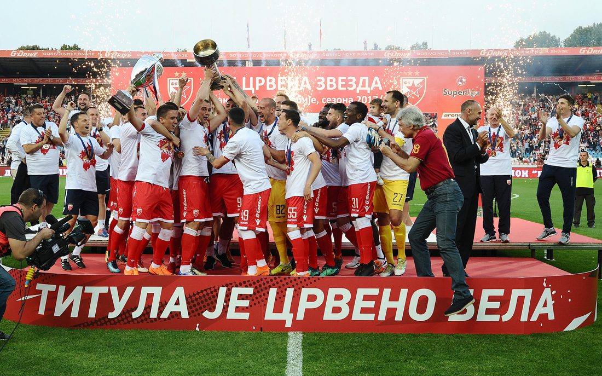
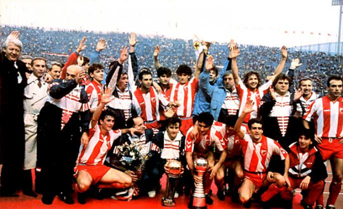

ФК црвена звезда
ФК Црвена звезда је српски фудбалски клуб из Београда и део је СД Црвена звезда. Црвена звезда је најтрофејнији фудбалски клуб у Србији освојивши укупно 56 титула, укључујући 28 домаћих шампионата, 24 национална купа, два Митропа купа, један Куп шампиона и један Интерконтинентални куп. Највећи успех постигнут је 1991. године када осваја Куп европских шампиона у Барију и Интерконтинентални куп у Токију исте године. Било је то највеће достигнуће Црвене звезде и било ког српског, а тада и југословенског фудбалског клуба. Поред тог успеха у европским такмичењима, издваја се и финале Купа УЕФА 1979, где су поражени од Борусије из Менхенгладбаха.
Игра на свом стадиону који од 2014. носи име по легенди Црвене звезде Рајку Митићу, са капацитетом од 55.538 седећих места. Стадион је међу домаћом публиком познат као Маракана по називу истоименог стадиона у Бразилу, иако му то никад није био званичан назив. Према већини истраживања Црвена звезда је најпопуларнији клуб у Србији и Београду. Такође веома је популаран готово у свим суседним државама али и међу српском популацијом широм света.
Клуб има дугогодишње ривалство са Партизаном. Од 2011. године постоји и женски клуб Црвене звезде.

Педесете - прва ера доминације (1952—1958).
Црвена звезда је наредну титулу освојила у сезони 1952/53., али су се праве промене у клубу догодиле средином те деценије. Тада је на место председника клуба дошао Душан Благојевић, Слободан Ћосић је постао генерални секретар, а на месту техничког директора се нашао Аца Обрадовић, познатији под надимком „Доктор О“.
Они су створили генерацију играча која је пет година доминирала домаћим првенством и која је остварила значајне резултате и на међународној сцени. У Европа купу I, ова генерација је успела да стигне до полуфинала у сезони 1956/57. Након тога је освојен и Дунавски куп 1958. Тим у коме су играли фудбалери као што су Беара, Дурковић, Станковић, Поповић, Митић, Костић, Шекуларац, освојили су четири титуле првака и два Купа, и при томе ни у једној од тих пет сезоне нису остали без трофеја.
Звездина игра била је брза и нападачка, што је клубу веома брзо донело велику популарност у земљи и свету. Паралелно са успесима на терену, Обрадовић је оформио основу стручног рада на којој ће се базирати каснији велики успеси Црвене звезде.